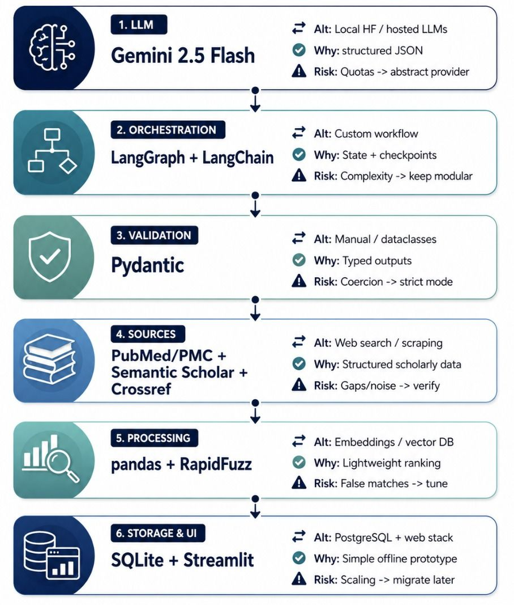

Section 04
Team Design Proposal (Week 7)
Group B (Fedi, Anne, Ali and I) proposed an LLM-powered planning agent that helps a health-sciences team screen literature for systematic reviews. The final design is a hybrid, BDI-inspired system with two agents. A Planning and Retrieval Agent decomposes the question and runs a ReAct loop (Yao et al., 2023) over PubMed/PMC, Semantic Scholar and Crossref. A Curation Agent filters, ranks and extractively summarises. A schema-validated JSON buffer replaces an agent communication language, and a human verification gate precedes storage in SQLite.
My contribution. My roles were Anticipated Challenges, Graphical Design and Final Document Review. I produced the component and activity diagrams, numbering the parallel flows (2-a, 2-b) and designing the rejection path back to the Curation Agent. I drafted the challenges and assembled the v9 integration draft from Fedi's architecture section.
Anne's review of v9 raised seven points, and I verified all of them as valid. Among them were about 2,188 words against a 1,000-word limit, inconsistent diagram numbering, a mismatched source, absent ethics and an arbitrary 90-second latency target. Through v18 I adopted her word allocation, substituted LEADS (Wang, Z. et al., 2025), added search logs, deduplication and inclusion/exclusion traceability, and replaced latency with outcome criteria, reaching 1,053 prose words.
Evaluation. The design's strength is that its review gate targets the costliest failure, a fabricated citation entering the evidence base. At final review I asked Anne to add accessed dates to five references. I did not escalate a second inconsistency that remains in the v16 file I hold: the text names one Gemini model version and Figure 3 another.
